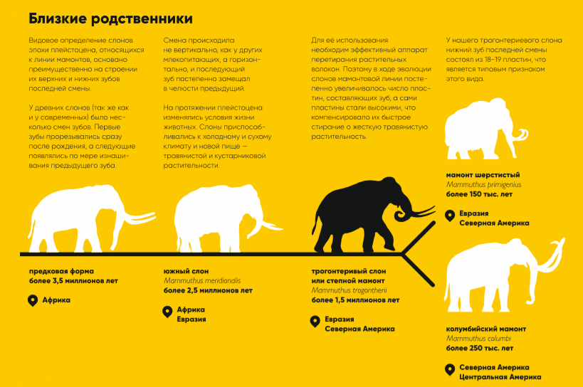

Схема Трогонтериевого слона
Трогонтериевый слон-
представитель семейства слоновых,
является предком мамонта,живший в Евразии в плейстоценовую эпоху.
Обитал на земле приблизительно
1 700 000- 200 000
лет назад.

Слон превосходит мамона примерно в 1.5 раза. Второе
название животного- степной мамонт.

Человек меньше степного мамонта примерно в 70 раз.
представитель семейства слоновых,
является предком мамонта,живший в Евразии в плейстоценовую эпоху.
Обитал на земле приблизительно
1 700 000- 200 000
лет назад.
Слон превосходит мамона примерно в 1.5 раза. Второе
название животного- степной мамонт.
Человек меньше степного мамонта примерно в 70 раз.
